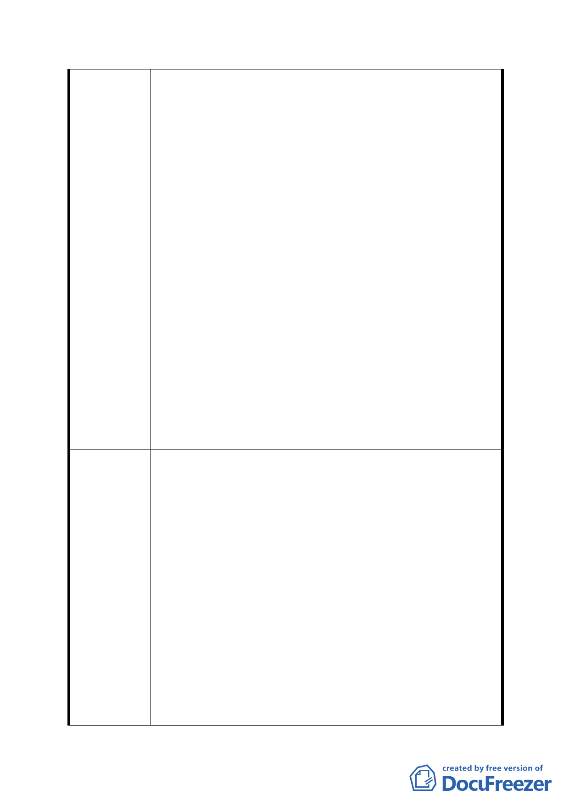

統一採用「防洪調節池」，並於計畫書中規定防洪
調節池工程必須公園化，建議採複層植栽種植喬
木、步道等兼顧環境生態之設計。
2.防洪調節池用地面積規模由原公展方案 0.516 公頃
擴大為修正方案 0.855 公頃，請水利工程處就面積
規模變動後之設計差異、防洪效益等提出說明。
3. 修正方案擬由軍營（機關用地）臨辛亥路側基地退
縮 5 公尺作為人行及開放空間，因退縮留設時程
與防洪調節池興建時程能否配合關乎周遭環境的
改善，請都市發展局考量於機關用地臨辛亥路側
劃設 5 公尺綠帶的可行性與軍方協商後提大會說
明。
4.計畫範圍內劃設 8 公尺計畫道路(原興德路)考量公
園用地與防洪調節池的連結並創造人行環境，建
議道路 2 側以工程設計手法留設 2 公尺寬之人行
道。
（二） 全案修正後資料及相關補充說明請規劃單位彙整並
研提修正前後對照表，公民或團體所提意見綜理表
則併本次所提修正方案處理，提大會審議。
（三） 附帶建議：呼應附近居民希望辛亥捷運站周邊整體
環境改善之意見，建議市府持續與國防部協調營區
遷移事宜。
1.本變更案係因本府教育局於民國 93 年評估辛亥國高中預
定地所屬行政區人口成長呈減緩趨勢，依目前該行政區
國、高中學校應足已因應就學需求，評估該預定地已無開
闢設校需求。故函請本府都市發展局依都市計畫程序變更
為非學校用地。
2.本變更案計畫原則為「提供作為公共使用為原則」，並配
合坡度、環境地質檢討，故坡度未超過 30％之土地，變
市府修正後 更為公園用地，至於坡度超過 30％之土地，則為維護坡
回 應 說 明 地安全及生態環境，變更為保護區。
3.另依「臺北市山坡地開發建築要點」第 4 點規定，「…平
均坡度超過百分之三十者，除水土保持必要設施外，不得
作為建築使用…」，故本市學校用地如位於坡度 30％之用
地上，其開發建築時仍需依前開要點規定辦理。
4.有關建議劃設住宅區部分，因考量本市土地使用分區管制
自治條例有關建築基地寬、深度、前後側院留設等規定，
為避免造成畸零地，且本案劃設相關公共設施用地後，剩
- 14 -